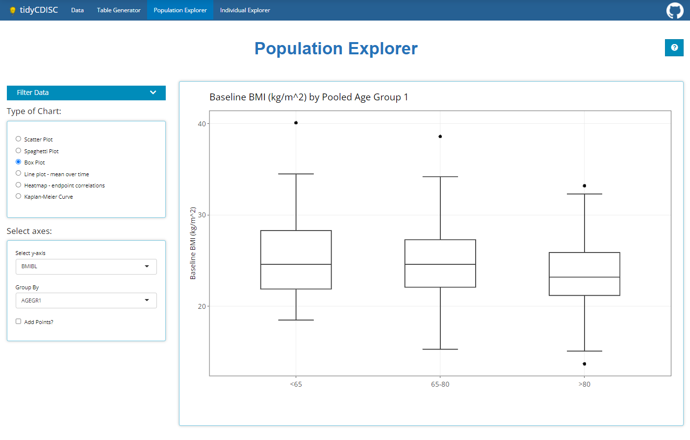

Learn how to contribute useful code to the population explorer tab, by topic.
We plot points, but we graph functions.
Adding a new graph to the population explorer is a four-step process:
Each plot in the Population Explorer is a submodule mod_popExp_<newgraph>.R (where mod_popExp.R and mod_popExp_ui.R. The plotting module is used for the reactivity logic of the plot; the widgets needed as well as how to render them. The plot function itself is found within mod_popExp_fct_<newgraph>.R
This tutorial will walk you through adding a graph module and a graph function, then applying it to the Population Explorer module using mod_popExp_boxplot.R and mod_popExp_fct_boxplot.R as examples. This is what the population explorer looked like when it first launched. Note we are using a small (N=15) test ADSL dataset here:

Inside mod_popExp_boxplot.R, boxPlot_ui is where we specify the widgets we need to create a boxplot, all wrapped inside a wellPanel
boxPlot_ui <- function(id, label = "box") {
ns <- NS(id)
tagList(
h4("Select axes:"),
wellPanel(
selectInput(ns("yvar"), "Select y-axis", choices = NULL),
fluidRow(column(12, align = "center", uiOutput(ns("include_var")))),
selectInput(ns("group"), "Group By", choices = NULL),
checkboxInput(ns("points"), "Add Points?")
)
)
}Note that this has two selectInput widgets, a fluidRow, and a checkboxInput widget.
Customize this to whatever widgets your graph requires.
The bulk of the server function, boxPlot_srv uses updateSelectInputs to populate the dropdown fields of the widget based on the module’s data argument. The data is a reactive that is passed down from the parent module. The boxplot itself is created using the function app_boxplot(), located in mod_popExp_fct_boxplot.R. This function takes on the selected inputs from the widget.
Here is the code for mod_popExp_fct_boxplot.R
#' tidyCDISC boxplot
#'
#' Create boxplot using either the selected response variable
#' or if a PARAMCD is selected, then plot the corresponding value
#' and filter the data by week
#'
#' @param data Merged data to be used in plot
#' @param yvar Selected y-axis
#' @param group Selected x-axis
#' @param value If yvar is a PARAMCD then the user must select
#' AVAL, CHG, or BASE to be plotted on the y-axis
#' @param points \code{logical} whether to add a jitter to the plot
#'
#' @family popExp Functions
app_boxplot <- function(data, yvar, group, value = NULL, points = FALSE) {
if (yvar %in% colnames(data)) {
p <- ggplot2::ggplot(data) +
ggplot2::aes_string(x = group, y = yvar) +
ggplot2::ylab(attr(data[[yvar]], "label"))
var_title <- paste(attr(data[[yvar]], 'label'), "by", attr(data[[group]], "label"))
} else {
d <- data %>% dplyr::filter(PARAMCD == yvar)
var_label <- paste(unique(d$PARAM))
var_title <- paste(var_label, "by", attr(data[[group]], "label"))
p <- d %>%
ggplot2::ggplot() +
ggplot2::aes_string(x = group, y = value) +
ggplot2::ylab(glue::glue("{var_label} ({attr(data[[value]], 'label')})"))
}
p <- p +
ggplot2::geom_boxplot() +
ggplot2::xlab("") +
ggplot2::theme_bw() +
ggplot2::theme(text = element_text(size = 12),
axis.text = element_text(size = 12),
plot.title = element_text(size = 16)) +
ggplot2::ggtitle(var_title)
if (points) { p <- p + ggplot2::geom_jitter() }
return(p)
}Inside mod_popExp_ui, the radioButtons plot_type control which plot widgets and plot output the user sees. Therefore the first step is to add your graph name to the types of graphs we can create:
radioButtons(ns("plot_type"), NULL,
choices = c("Scatter Plot",
"Spaghetti Plot",
"Box Plot",
"<newgraph>")
)
)Next we use conditionalPanel statements to show the correct inputs based on which plot the user selects. When the input.plot_type is Box Plot the boxPlot_ui function is called and the “boxPlot” name space is added so that the inputs all have a prefix of both the Population Explorer module and the Box Plot module. Do the same for your new graph.
#wellPanel(uiOutput(ns("plot_ui")))
div(id = "pop_cic_chart_inputs",
conditionalPanel("input.plot_type === 'Scatter Plot'", ns = ns, scatterPlot_ui(ns("scatterPlot"))),
conditionalPanel("input.plot_type === 'Spaghetti Plot'", ns = ns, spaghettiPlot_ui(ns("spaghettiPlot"))),
conditionalPanel("input.plot_type === 'Box Plot'", ns = ns, boxPlot_ui(ns("boxPlot"))),
conditionalPanel("input.plot_type === '<newgraph>'", ns = ns, boxPlot_ui(ns("<newgraph>")))
)On the server side we save the output of the box plot server function to an object, p_box. Note that this module takes on a data argument. The user input files are properly merged and this merged dataset is what we pass to the child plot modules. Do the same for your new graph.
p_scatter <- callModule(scatterPlot_srv, "scatterPlot", data = dataset)
p_spaghetti <- callModule(spaghettiPlot_srv, "spaghettiPlot", data = dataset)
p_box <- callModule(boxPlot_srv, "boxPlot", data = dataset)
p_<newgraph> <- callModule(boxPlot_srv, "<newgraph>", data = dataset)Now that we have our module outputs, we can pass the graph object to Population Explorers plot_output. Don’t forget to add the reactive callModule statement for your graph. This takes on a switch statement where we render the module object based on which plot is selected.
Note that the plot types are surrounded by back-ticks, not single quotes. On American keyboards, the back-tick resides on the same key as the tilde (“~”). Be sure your naming conventions are consistent. Don’t use lowerCamelCase for your graph name in one place and UpperCamelCase in another.
# use plot output of the module to create the plot
output$plot_output <- renderPlotly({
switch(input$plot_type,
`Scatter Plot` = p_scatter(),
`Box Plot` = p_box(),
`Spaghetti Plot` = p_spaghetti(),
`<newgraph>` = p_<newgraph>()
)%>%
...
})A file called test-popExp_fct_boxplot.R is created to test that the plot function inside mod_popExp_fct_boxplot generates the expected output given various inputs.
require(testthat)
context("Create popExp Boxplot")
test_that("numeric response variable works", {
plot <- app_boxplot(tg_data, "AGE", "SEX")
expect_equal(quo_get_expr(plot$mapping$x), sym("SEX"))
expect_equal(quo_get_expr(plot$mapping$y), sym("AGE"))
})
test_that("PARAMCD response variable works", {
plot <- app_boxplot(tg_data, "DIABP", "SEX", value = "AVAL")
expect_equal(quo_get_expr(plot$mapping$x), sym("SEX"))
expect_equal(quo_get_expr(plot$mapping$y), sym("AVAL"))
})
test_that("adding jitter works", {
plot <- app_boxplot(tg_data, "AGE", "SEX", points = TRUE)
expect_equal("PositionJitter", class(plot$layers[[2]]$position)[1])
})You will need to develop similar tests for you graph. Review the testthat() package first.